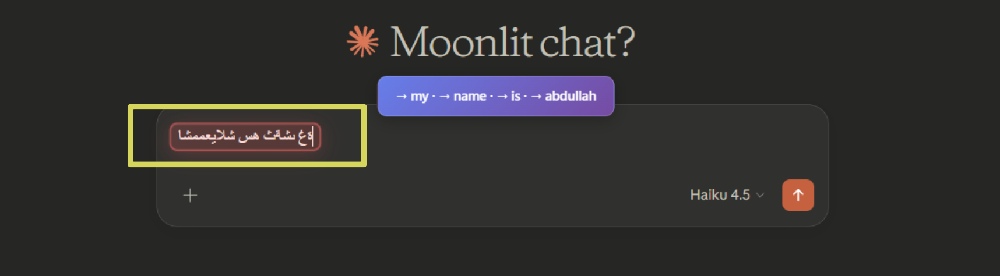
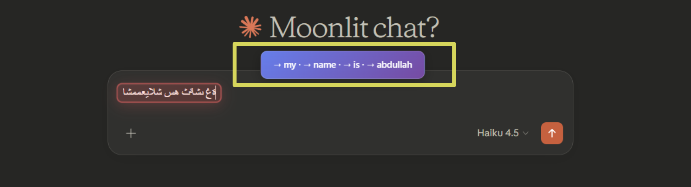
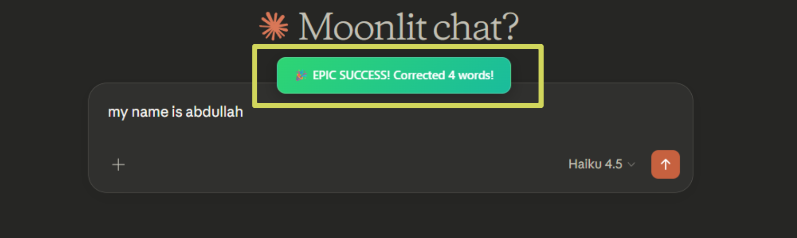
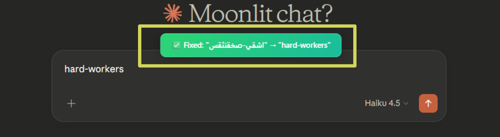
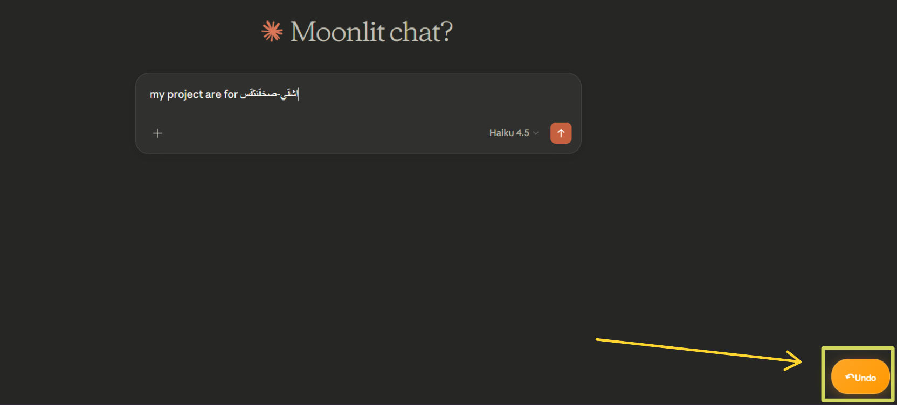
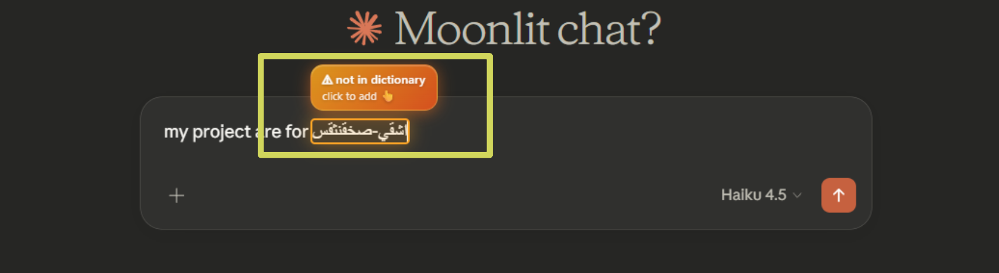
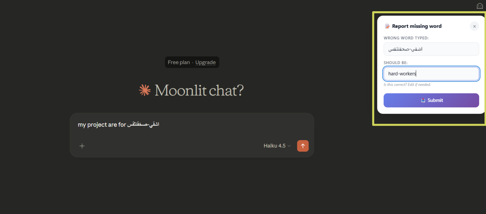
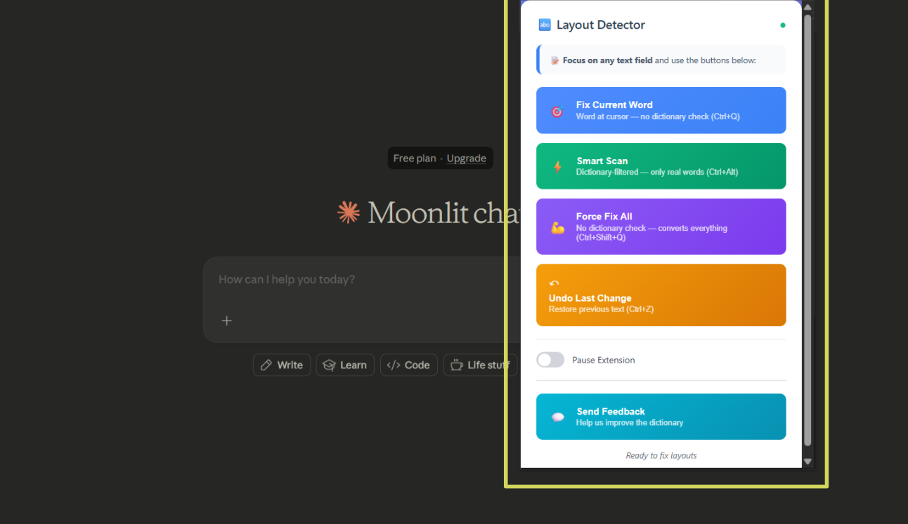

One shortcut detects and fixes layout mistakes in any text field on any website — instantly.
You switch tabs, forget to change the keyboard layout, and start typing. By the time you notice, you've written a whole sentence in the wrong language.
Every Ctrl+Alt triggers a four-phase progressive scan with real-time visual feedback.
A sweep animation plays across the input field — signals the scan is running.
Each word is tested against both Arabic and English dictionaries to find layout mismatches.
🔴 Red box = will be converted. 🟠 Orange box = no dictionary match found.
Words are replaced in the text. A toast previews all conversions. Undo button appears.

The main shortcut. Scans the entire focused field, highlights all words typed in the wrong layout, and converts them in one go. Only words that match a dictionary entry are converted — correct words in a mixed sentence are untouched.


Place your cursor inside a single wrong word and press Ctrl+Q. Only that one word is converted — the rest of the text is ignored. Useful when you spot one mistake mid-sentence without wanting to re-scan everything.

Converts every word in the field regardless of dictionary results or language detection. Designed for users writing in languages beyond Arabic and English — Farsi, Urdu, or any other language that shares the Arabic script but is not yet in the dictionary. As the extension expands its language support, this shortcut remains the guaranteed fallback.
Why this
exists:
Ctrl+Alt
only converts words it can verify in the
dictionary — this protects intentional bilingual text
from being changed. Ctrl+Shift+Q
removes that filter entirely, making it the
universal tool for any script-based layout swap.
Every correction is saved in a per-session stack. Press Ctrl+Z immediately after any correction to restore the original text exactly as it was. Works for all three correction methods. Press multiple times to undo multiple corrections in reverse order.

The extension communicates through four distinct visual elements. Here's what each one means.
Appears around words the extension has identified as wrong-layout and is about to convert. Flashes briefly before disappearing as the correction is applied.
The word looks like a layout mistake but its converted form isn't in any dictionary. The extension won't guess — it flags it instead. Click the label above it to report the correct form.
Shows a preview of all conversions: → word · → word.
Tap "+N more" to expand if there are more than 5 words. Disappears on scroll or after 2.5 seconds.
Appears in the corner after every successful correction. Click it or press Ctrl+Z to instantly restore the original text. Disappears after a few seconds if not used.
When a word can't be matched to any dictionary entry, the extension flags it instead of guessing. You can report the correct form to help improve the dictionary for everyone.

The word stays in the text unchanged. An orange border surrounds it so you can see exactly which word was flagged.
"⚠ not in dictionary — click to add 👆" appears above the box. Hover it to keep it visible. It auto-fades after 3 seconds.
A panel appears anchored to the field. Type what the word should have been and submit — your correction goes directly into the dictionary improvement queue.

Click the extension icon in your Chrome toolbar to open the popup. It gives you a status overview and a direct feedback channel.
Shows whether the extension is active on the current page.
Opens a form to send suggestions, bug reports, or missing word requests directly to the developer.
All four shortcuts listed at a glance — no need to remember them all.

The extension must be installed and active. Click inside any field below, then press Ctrl+Alt.
Real auto-correction from the extension content script does not run on this page because it is loaded
as chrome-extension://.... Chrome isolates extension pages for security, so content
scripts are designed to run on regular websites instead.
The Fix it buttons below simulate the same behavior for learning purposes. To use the real shortcuts on live text fields, open any normal website and press Ctrl+Alt, Ctrl+Q, or Ctrl+Shift+Q. Go to any www. website (for example, www.google.com) and try it live there.
Full sentence intentionally typed with the wrong layout active.
✓ Auto-converted to ArabicSame problem, opposite direction.
✓ Auto-converted to EnglishCorrect English words are untouched. Only the mistyped ones convert.
✓ Partial conversionSome words convert cleanly. Others are flagged because their conversion isn't in any dictionary.
✓ Known words converted ⚠ Unknown words → orange boxAll words are valid English. The extension does nothing.
✓ No changesAll words are valid Arabic. The extension leaves them alone.
✓ No changesReal mixed writing where both languages are intentional. The extension is smart enough to leave it alone.
✓ No changesFree, open source, no account required.
Need help or want to report feedback? Open the extension popup and tap Send Feedback.